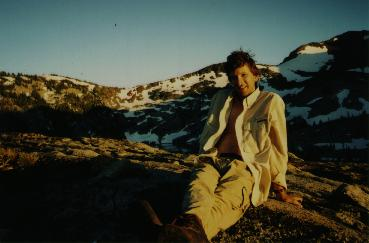

Larry McVoy's home page
Larry McVoy's home page

Notice: I'm moving to a new job. New email is lm@who.net.
Who am I?
I'm an engineer for Silicon Graphics, working in the networking group.
I spend most of my time waving my hands and convincing other people they
want to work on stuff that I think is important. The name server is
an example, I got
John Schimmel to work on that.
I'm constantly trying
to figure out how to make things go fast, which is why I wrote the
lmbench benchmark suite. Lmbench
measures the basic building blocks of a computer system.
Occasionally, I have to
do real work, like the BDS stuff mentioned below.
I live in San Francisco and divide my time there between my girlfriend,
woodworking, playing pool, and riding motorcycles.
Current stuff I'm working on (slides)
Papers I've written
Personal stuff (lots of pictures)
Me, my relatives, friends, etc.
-
Me and my nephew
Jacob at Ocean Beach in
San Francisco. He was about 2 years old and still hadn't hit the terrible
twos, I think his Mom must have done a good job.
Here he is with his Mom about
7 months pregnant. The next one turned out to be a boy
named Zeke.
- My brother Chris trying to look smart.
- I used to be even more crazy than I am now; here's a picture of me
doing some stupid rollerblading tricks.
- My favorite picture of me.
- I work at home a lot and this is
what that is like. My cat was pretty sick in that picture, but I nursed her back to
the land of the living.
- Me studying.
- A really old picture of me in Mexico, with really long hair
juggling.
My cats
- I like cats and I have had two over the last 18 years (whew) or so.
Here's Zoey after she's had a few.
Looks possessed, doesn't she? Here's a
better picture of her. Until she died around
Christmas of 1994, she had outlasted all of my girlfriends - I had her
for almost 14 years. I still miss her and sometimes look for her when
I go into the kitchen - it's weird to think she's gone.
I eventually decided not to mope over her forever and went and
found Mama cat
at the pound. That's Linux running on the PC next to her, she fixes a lot
of mouse driver bugs.
Here's another picture of Mama cat on the workbench
. And one more of here in my van - she
likes to travel, no kidding. One last shot
of her.
- November '96: Mama cat is missing.
We're still looking for her, but it has been two weeks and
it isn't looking very hopeful.
- January '97: Mama cat is still missing. I go to the pound about
once a week with no luck. It sucks.
Fishing
- I like to fly fish (yeah, I tie my own, ooh, wow) and I took
a trip with my friend John Weitz. John is a hot shot
photographer and here he is at work.
Here's John catching a trout in the Trinity Alps. This is
me fishing in the upper Sacramento River.
John was talking some shots of a cool old
shed,
so I took one too. Here's a shot that John took of
me sitting in the doorway of that shed
(warning: it's ~60Kb).
- This is the ultimate in fishing tall tails, except I have pictures
to prove it happened. I was fishing in Canada and thought I had hooked
some weeds. I was reeling it in when all at once it took off. Funny sort
of fish, it felt weird. When I get closer, I saw that I had two fish -
a little one that had hit the lure, and a big
Northern Pike that had hit the little pike.
I thought for sure he would let go when he saw me, but I guess he was
hungry, because I
picked him up. Pretty wild, huh?
Wilderness
- I like to backpack
a lot and I have some friends that go with me. Here's
Neil with his dog Elvis and
here they are again hard at work.
- Me cross country skiing in the Sierra
back country. It was a weekend trip to Ostrander Hut/Lake (cool place).
I think that is Yosemite Valley in the background, doesn't that look like
half dome to you? Here's the same
view
about 5 years earlier with my friends
John G., Bernd N., and Andy A.
- My Dad's Mad River canoe with a
cover that my sister made (pretty cool cover, if you ask me, it
kept us dry). We go canoeing in Canada quite a bit.
Woodworking
- I am not just a computer nerd, I'm also a woodworking nerd, and I'm
especially nerdy about hand planes. Many
of those are a hundred years old, some are more than that ("they don't
make 'em like they used to" definitely applies to tools).
Here's my first effort at a real woodworking project, what else, a
toolbox. Here's a view with the
drawers open. The little box on top is a
jewelry box (or whatever) I made for an old girlfriend.
I live in San Francisco, in
a flat, so my workshop is out on my back deck.
That's a small jointer in the foreground and a table saw clamped to the
rails in the background. It's a bit cramped, but it has a nice
view.
I finally decided to build a workbench.
Here's the benchtop in the process of being
hand planed flat (lotso shavings, huh?).
-
I do stuff on commission sometimes, this is my last girlfriend with a
bookshelf I built for a friend at
work. It was pretty simple since it was a first try, but he liked it.
Here's another picture of the bookshelf.
- Here I am proudly showing off a little
TV cabinet made out of pine with some
really interesting grain. That's the heartwood of the pine.
Here's a closeup picture of
the cabinet.
-
Because space is tight in San Francisco, I think my next project will be
a tall, thin
chest of drawers
sort of like a lingerie chest, only sized for guy's clothes. It's about
six feet tall by 18 inches square, which I think is about right. This was
drawn in James Clark's implementation of pic, in the groff tool suite.
Perverse, I know.
-
Here is a document on flattening
hand planes, something that is frequently required for good performance.
Amusements
Larry McVoy,
lm@sgi.com
Page accesses since Wed Jun 26 1996:
![[Sorry, counter is a GIF image!]](/cgi-bin/Imagemap/hitcount?lm_home)
{kind=link}

{kind=link}
{kind=link}
{kind=link}
{kind=link}
{kind=link}
{kind=link}
{kind=link}
{kind=link}
{kind=link}
{kind=link}
{kind=link}
{kind=link}
{kind=link}
{kind=link}
{kind=link}
{kind=link}
{kind=link}
{kind=link}
{kind=link}
{kind=link}
{kind=link}
{kind=link}
{kind=link}
{kind=link}
{kind=link}
{kind=link}
{kind=link}
{kind=link}
{kind=link}
{kind=link}
{kind=link}
{kind=link}
{kind=link}
{kind=link}
{kind=link}
{kind=link}
{kind=link}
{kind=link}
{kind=link}
{kind=link}